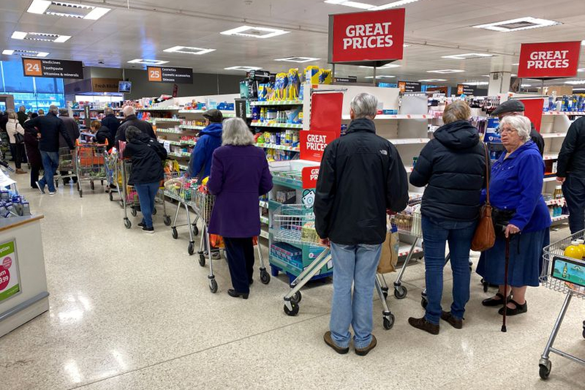

Regresar
Asociados a su nivel de riesgo
-

- 
SITUACIONES DE VIDA COMÚN MÁS HABITUALES Y SU RIESGO POTENCIAL DE TRANSMISIÓN
IR A RESTAURANTES
Posible alto riesgo aunque se puede reducir a riesgo medio al sentarse al aire libre con distancia y definfección de superficies comunes.
IR A BAÑOS PÚBLICOS / ÁREAS COMUNES
Alto riesgo potencial de transmisión por aire y riesgo medio de transferencia por superficie.
IR A SUPERMECADOS
Posible riesgo medio, aunque se puede reducir a la baja si se limita el tiempo en la tienda y siguen unas estrictas medidas de higiene
ESPACIOS INFERIORES SIN MUCHA VENTILACIÓN (OFICINAS)
Sería de alto riesgo sobre todo si la exposición se estiende en el tiempo, por ejemplo en las oficinas cerradas.
Sin embargo, los CDC confirma que existe un muy bajo riesgo de transmisión desde las superficies, ya sean orgánicas o artificiales, con la excepción de la propia piel humana.
Guía de evidencia científica sobre la transmisión del coronavirus, por parte del centro de control de Enfermedades de EEUU.
Martes 23 de Junio de 2020Fuente: www.Infobae.com
LA MEJOR MANERA DE PREVENIR LA ENFERMEDAD ES EVITAR LA EXPOSICIÓN A ESTE VIRUS
Los CDC analizaron las situaciones de vida en común más habituales y su riesgo potencial de transmisión, en el que la dicotomía interior/exterior, la ventilación del espacio de transmisión, la densidad total de personas en un mismo lugar y la duración de la exposición al virus, son las principales variables por analizar. El centro de control de Enfermedades de EEUU elaboró una guía con la evidencia científica emergente sobre la transmisión del coronavirus, que confirma que los riesgos de contagio son mucho mayores en espacios cerrados que abiertos.